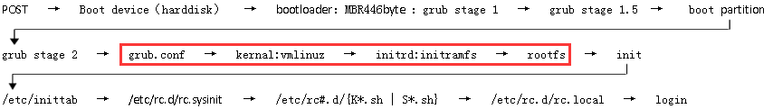
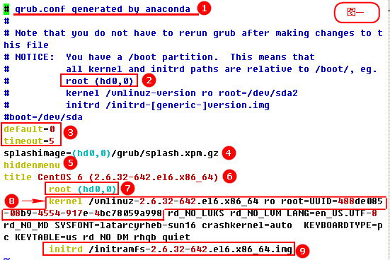

配置
grub.conf 配置文件
系统启动流程 
- /boot目录下
- vmlinuz-2.6.32-642.el6.x86_64就是内核文件内核文件
- initramfs-2.6.32-642.el6.x86_64.img文件系统驱动文件

编号解释
1、从注释可以看出，这个grub.conf是由anaconda程序生成的，anaconda就是我们安装操作系统时候使用的安装向导。
2、注释中有提示我们：你有一个单独boot分区，这意味着kernel文件和initrd文件的路径是相对于/boot分区来说的， 因为我们的boot分区对应的设备是/dev/sda1,所以，此处用root(hd0,0)表示，其中，hd0表示第一块硬盘， 逗号后面的0表示第一个分区,也就是说(hd0,0)表示第一块硬盘的第一个分区，也就是我们正在使用的/dev/sda1
3、其中default=0表示有多个grub引导菜单时，选择哪一个作为默认启动引导菜单，也就是说，当有多个 title时，默认选择哪个title中的配置作为默认引导配置，default=0表示默认使用第一个title菜单中的配 置。其中timeout=5表示如果5秒以内，用户没有选择任何一个title，则使用default中指定的title菜单中 的配置进行引导。
4、引导时的背景图片，此项不建议设置，因为如果此项配置的背景图片并不存在，那么在引导时会出现错误。
5、表示在系统启动时，隐藏所有title菜单，并不让用户直接看到启动菜单，如果用户不做任何干预，则默认启动default所指定的title。
6、title直译为"标题"，可以理解为一个grub引导的配置列表，可以存在多个title，也就是说可以用不同的 配置去引导系统，title下面配置项都属于当前title
7、指定这个配置列表中的kernel和initrd所在的分区，这个配置项就是前面编号2中所描述的kernel文件所在 的分区，跟编号2的意思完全一样（具体意思参考编号2），只是编号2是在注释中，编号7是CentOS 6 (2.6.32-642.el6.x86_64)的配置项，也就是说，编号7只在CentOS 6 (2.6.32-642.el6.x86_64)这个title的范围内生 效，而且再次强调：root (hd0,0)表示kernel文件和initrd文件所在分区，而不是指"根分区"。
8、此处我们只说明红框中的内容，红框中的内容也是grub配置文件中的核心，它指明了kernel文件的位置
9、initrd/initramfs-2.6.32-642.el6.x86_64.img 内核获取到根分区所使用的文件系统的驱动， initramfs-2.6.32-642.el6.x86_64.img这个文件中就包含了内核所需要寻找的驱动。